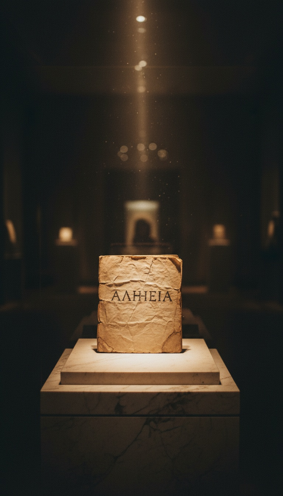

Every Trinitarian church on Earth stands on a single Greek word that no apostle ever wrote, no evangelist ever quoted, and no Hebrew prophet ever uttered. A Roman emperor put it on the table in 325 AD, and a bishop wrote the cover letter explaining it to his flock.
The word is homoousios. It means same substance. It is not in the Bible.

The Word That Is Not There
Homoousios (ὁμοούσιος) appears zero times in any Greek New Testament manuscript. Not in Codex Sinaiticus, held at the British Library since 1933. Not in Codex Vaticanus, shelved in the Vatican Apostolic Library as Vat.gr.1209. Not in Codex Alexandrinus, sitting in the same British Library case as Sinaiticus.
The term carried baggage long before Nicaea. It surfaces in second-century Gnostic systems described by Irenaeus in Against Heresies Book I, written around 180 AD, and in Stoic discussions of shared material substance. It was philosophy vocabulary, not synagogue vocabulary.
The Catholic Encyclopedia of 1913 admits the early reception openly. The word was called un-Scriptural, suspicious, and of a Sabellian tendency. Those are the church's own historians, not skeptics.
Constantine Picked The Word
Eusebius of Caesarea wrote a letter to his congregation immediately after the Council of Nicaea closed in the summer of 325 AD. The letter survives inside Athanasius's De Decretis and Socrates Scholasticus's Ecclesiastical History Book I, chapter 8.
Eusebius says the emperor Constantine himself proposed homoousios. The bishop is explaining to nervous parishioners why a word they had never heard in scripture was now binding on their souls.
Constantine had been a baptized Christian for exactly zero days at this point. He was baptized on his deathbed in 337 AD by Eusebius of Nicomedia, an Arian bishop. The man who locked in the formula did not even share the theology of the man who baptized him.
The Pre-Nicene Fathers Said Something Different
Origen of Alexandria, writing around 230 AD in On First Principles Book I, treated the Son as eternally generated but subordinate in function. Origen's Greek vocabulary is not the Nicene vocabulary.
Tertullian, writing in Against Praxeas around 213 AD in Latin from Carthage, says plainly that the Father is greater than the Son. He quotes John 14:28 to prove it. That verse is still in your Bible.
Justin Martyr, in his First Apology submitted to Antoninus Pius around 155 AD, calls the Logos a second God, numerically distinct from the Father. The manuscript tradition runs through Parisinus graecus 450, copied in 1364 and now in the Bibliothèque nationale de France.
Either two hundred years of pre-Nicene theology were wrong, or one philosophical term was forced into the creed by a Roman emperor who had not yet been baptized.
Athanasius And The Five Exiles
Athanasius of Alexandria spent forty-five years defending one word. He was exiled five separate times between 335 AD and 366 AD by four different emperors. Trier in 335. Rome in 339. The Egyptian desert in 356. Back to the desert in 362. Hiding in his father's tomb in 365.
His treatise De Decretis Nicaenae Synodi, written around 350 AD and preserved in Codex Basiliensis A.III.4 at the University of Basel library, is essentially a long argument that an unscriptural word can still be scriptural in meaning.
That is a tell. You do not write a defense like that unless the original objection landed hard. The objection was the same one the Eusebians made at Nicaea. The word is not in the Bible.
Constantinople 381 Extended The Formula
The First Council of Constantinople convened in May 381 AD under the emperor Theodosius I. It produced what is now recited every Sunday as the Nicene Creed. It is technically the Niceno-Constantinopolitan Creed.
This council took the word homoousios and applied it to the Holy Spirit. The original 325 creed had only one anemic line about the Spirit. The 381 expansion gave the Spirit the same substance status as the Father and the Son.
Theodosius issued the edict Cunctos populos from Thessalonica on 27 February 380 AD, before the council even met. It made Nicene Christianity the state religion of the Roman Empire and labeled everyone else demented and insane. The doctrine was decided by imperial decree first, then ratified by bishops second.
What Got Erased
Arius of Alexandria, the man whose theology Nicaea was convened to crush, had his writings ordered burned by Constantine in 333 AD. The edict survives in Socrates Scholasticus's Ecclesiastical History Book I, chapter 9. Possession of an Arian text was made a capital offense.
We know Arius's actual words mostly through the quotations of his enemies. Athanasius preserves fragments of the Thalia inside his Orations Against the Arians, written around 340 AD. That is like reconstructing a defendant's testimony only from the prosecutor's notes.
The same imperial machine that selected homoousios also decided which books got copied. Eusebius of Caesarea was commissioned by Constantine in 331 AD, according to Eusebius's own Life of Constantine Book IV, chapter 36, to produce fifty deluxe Bibles for the new churches of Constantinople. The man who wrote the letter explaining homoousios also chose which scriptures got shipped.
Modern Christianity recites a creed written by committee, edited by emperors, and anchored on a word that the apostles never used. Every Sunday, billions of people affirm a philosophical term coined by Gnostics, refined by Stoics, and slipped into the formula by a man who would be baptized by a heretic on his deathbed twelve years later.
The Eusebius letter is still there. The De Decretis defense is still there. The 1913 Catholic Encyclopedia entry admitting the word was un-Scriptural is still there. The receipts have not moved. The only question is who taught you not to read them.
So tell me. If the word that defines God is not in the book that reveals God, who actually wrote your religion?
Before you go
7 books the Vatican doesn't want you reading. Free PDF — the texts they cut, with sources. Joined by 140+ Inner Circle members.
No spam. Unsubscribe anytime.
Go deeper
The Hidden Canon, Vol. I — Enoch. Jubilees. Thomas. Mary. Judas. 90 pages, 14 chapters, every receipt cited. The books your Bible quietly removed.
Read the Canon →Books that informed this investigation
As an Amazon Associate, Hidden Epoch earns from qualifying purchases. Cost to you: nothing.
Research safely
The VPN we use to research without being tracked. First 3 months free.
Get NordVPN →